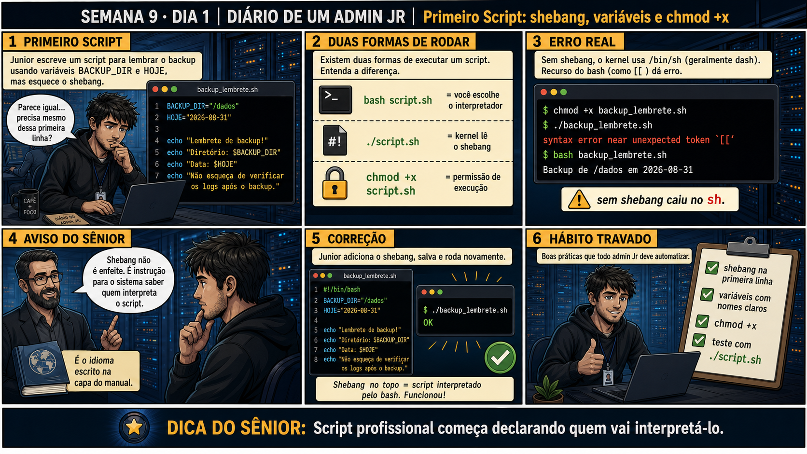

DIARIO DE UM ADMIN JR. | FASE 1 — LINUX, DO BÁSICO AO AVANÇADO
🔗 Conecta com a Fase 1 inteira: Semanas 1 a 8 te deram um toolkit gigante de
comandos individuais. Hoje começa a Semana 9 — automação de verdade: transformar sequências de comandos em
scripts reais, começando pela primeira linha que todo script profissional precisa ter.
🔓 Privilégio de hoje: escrever e executar seu primeiro script real. Você ganha
o hábito de sempre declarar o shebang — a instrução que diz ao sistema quem deve interpretar o script.
Semana 9 · Dia 1 | Nível Júnior
Primeiro Script: Shebang, Variáveis, chmod +x
script profissional começa declarando quem vai interpretá-lo
ANTES DE ALTERAR, OBSERVE. DEPOIS DE ALTERAR, VALIDE.

1. O chamado
Você escreve seu primeiro script pra lembrar de fazer backup, com variáveis
BACKUP_DIR e HOJE. Ele parece pronto — mas sem a primeira linha certa, o sistema
pode interpretar o script com o programa errado, e um recurso do bash pode simplesmente não funcionar.
💡 Passa o mouse nas palavras destacadas pra ver uma dica rápida — clica se quiser a explicação completa com analogia.
2. O sênior te conta
Segunda-feira, abrindo a Semana 9
As últimas oito semanas te deram um toolkit gigante de comandos individuais — do primeiro
ssh até tee na sexta passada. Hoje começa a virada de chave: transformar
sequências de comandos em scripts reais, automação de verdade. E como toda primeira vez, tem uma
armadilha clássica esperando bem no início.
Meu primeiro script "de verdade" foi um lembrete de backup, nada sofisticado — duas variáveis
(BACKUP_DIR, HOJE) e um echo. Escrevi o arquivo, salvei, rodei
chmod +x, e tentei executar com ./backup_lembrete.sh. Erro de sintaxe, logo na
parte do script que usava [[ ]] — um teste condicional que eu tinha certeza que estava
escrito certo. Rodei o mesmo arquivo com bash backup_lembrete.sh, e funcionou perfeitamente.
Mesmo arquivo, dois resultados diferentes. Fiquei sem entender nada por uns bons vinte minutos.
A explicação, quando veio, foi simples e reveladora: quando você roda ./script.sh, o kernel
olha pra primeira linha do arquivo procurando um shebang — a instrução #!/caminho que
diz exatamente qual interpretador deve rodar aquele script. Sem shebang, o sistema usa um padrão,
geralmente /bin/sh (que costuma ser dash, mais simples e restrito). E
[[ ]] é um recurso específico do bash — dash simplesmente não entende essa sintaxe. Quando
eu rodava bash script.sh diretamente, eu estava dizendo explicitamente "use o bash", e
contornando o problema sem perceber que ele existia.
Um script profissional nunca deixa isso ao acaso. Hoje você escreve o seu primeiro script começando
exatamente pela linha que resolve esse problema antes dele nascer: #!/bin/bash, sempre a
primeira linha, sem exceção.
3. Decodificador de conceitos
Clica em qualquer termo pra ver a definição completa e uma analogia do dia a dia:
4. Ferramentas e leitura da evidência
Comando
O que observar e por que importa
chmod +x script.sh
Dá permissão de execução — sem ela, ./script.sh nem começa a rodar.
./script.sh
O kernel lê o shebang da primeira linha pra decidir qual interpretador usar.
bash script.sh
Você escolhe o interpretador diretamente, ignorando o shebang (ou a falta dele).
$ chmod +x backup_lembrete.sh
$ ./backup_lembrete.sh
syntax error near unexpected token `[['
$ bash backup_lembrete.sh
Backup de /dados em 2026-08-31
--- corrigido, com #!/bin/bash na primeira linha ---
$ ./backup_lembrete.sh
OK
5. Laboratório guiado — pegue na mão, comando por comando
Segurança: execute os testes apenas em VM descartável e confirme nomes de discos, hosts e arquivos antes de cada comando.
Ação: crie um script sem shebang, com uma variável e um teste [[ ]], e tente rodar direto.
$ cat > teste.sh << 'EOF'
BACKUP_DIR=/dados
if [[ -d "$BACKUP_DIR" ]]; then echo "existe"; fi
EOF
$ ./teste.sh
Resultado esperado: "Permission denied" primeiro (sem chmod); depois de chmod +x, um erro de sintaxe relacionado ao [[.
Por que fizemos isso: reproduzir o exato sintoma da história de hoje — [[ ]] falhando sem shebang — é o que fixa a lição na prática, não só na teoria.
Cilada comum: confundir "Permission denied" (falta chmod) com o erro de sintaxe do interpretador errado (falta shebang) — são dois problemas diferentes que aparecem em sequência.
Ação: dê permissão de execução e compare ./script.sh com bash script.sh.
$ chmod +x teste.sh
$ ./teste.sh
$ bash teste.sh
Resultado esperado: ./teste.sh dá erro de sintaxe no [[; bash teste.sh funciona normalmente, exatamente como na história.
Por que fizemos isso: ver essa diferença lado a lado, com o mesmo arquivo, é a prova mais concreta de que o interpretador realmente muda dependendo de como você chama o script.
Cilada comum: testar só com bash script.sh e nunca perceber o problema — em produção, scripts costumam ser chamados via ./ ou por cron, não sempre com bash explícito.
Ação: adicione o shebang como primeira linha e confirme que ./script.sh agora funciona de forma consistente.
Resultado esperado: os dois comandos agora produzem exatamente o mesmo resultado — "existe".
Por que fizemos isso: essa é a correção exata que resolveu o mistério da história — uma única linha, e o comportamento fica previsível não importa como alguém chame o script.
Cilada comum: colocar o shebang em qualquer lugar que não seja a primeira linha absoluta do arquivo — se vier depois de um comentário ou linha em branco, ele não é reconhecido.
🧑🏫 Aqui entra o Mentor (em breve): se um script continuar com comportamento inconsistente mesmo com shebang, este é o ponto onde o chat com o Sênior-IA vai ajudar a diagnosticar.
Ação: adicione mais uma variável e confirme que ela é interpolada corretamente.
$ echo 'HOJE=$(date +%F)' >> teste.sh
$ echo 'echo "Backup de $BACKUP_DIR em $HOJE"' >> teste.sh
$ ./teste.sh
Resultado esperado: saída mostrando "Backup de /dados em 2026-XX-XX", com os valores reais das variáveis substituídos.
Por que fizemos isso: confirmar a interpolação de variáveis é a base pra tudo que vem nos próximos dias da Semana 9 — condicionais, loops, funções, todos dependem de variáveis funcionando direito.
Cilada comum: usar aspas simples em vez de duplas ao redor de variáveis — aspas simples impedem a interpolação, e a variável aparece literalmente como texto ($BACKUP_DIR) em vez do valor.
Ação: documente shebang usado, permissão aplicada, teste de execução, resultado consistente.
# anote no seu diário de bordo:
Shebang: #!/bin/bash (primeira linha, confirmado)
Permissão: chmod +x aplicado
Teste: ./teste.sh e bash teste.sh produzem resultado idêntico
Variáveis: BACKUP_DIR e HOJE interpoladas corretamente com aspas duplas
Resultado esperado: registro completo reproduzindo o painel 6 da prancha de hoje.
Por que fizemos isso: esse hábito de documentar desde o primeiro script é o que separa quem escreve automação confiável de quem só "faz funcionar uma vez".
Cilada comum: pular a documentação achando que "é só um script simples" — os hábitos que você fixa hoje, no script mais simples possível, são os mesmos que vão sustentar scripts bem mais complexos adiante na semana.
6. Antes de ver as opções — tenta responder
🧠 Recall ativo: o que acontece quando você roda ./script.sh SEM um
#!/bin/bash na primeira linha?
Sem shebang,
o kernel usa um interpretador padrão (geralmente /bin/sh, que costuma ser
dash)
— e recursos específicos do bash, como [[ ]], podem dar erro de sintaxe nesse interpretador
mais restrito.
QUESTÃO 1 de 3
7. Questão comentada — clica numa alternativa
Seu script roda com erro de sintaxe ao usar ./script.sh, mas funciona quando
você roda bash script.sh. Qual é a causa mais provável e a correção correta?
💡 Analogia do Sênior para Fixar: O Shebang '#!/bin/bash' na primeira linha do script é como a etiqueta com o idioma na capa do livro: avisa ao kernel qual interpretador deve ser usado para ler o código.
QUESTÃO 2 de 3 — cenário de erro real
7.1 Depois de adicionar o shebang, ./script.sh funciona igual a bash script.sh — isso é sempre garantido?
Com #!/bin/bash na primeira linha, os dois métodos de execução agora produzem o mesmo
resultado.
Por que essa consistência é importante pra um script de produção?
💡 Analogia do Sênior para Fixar: A permissão de execução 'chmod +x script.sh' é como a autorização de decolagem: transforma um arquivo de texto comum em um programa executável pelo sistema.
QUESTÃO 3 de 3 — detalhe que confunde todo iniciante
7.2 "Sem chmod +x, o script ainda pode rodar de algum jeito?"
Um colega esquece de rodar chmod +x no script novo e tenta executá-lo com
./script.sh, recebendo Permission denied.
Existe uma forma de rodar o script mesmo sem chmod +x?
💡 Analogia do Sênior para Fixar: O comando 'exit 0' vs 'exit 1' é o sinalizador verde ou vermelho: avisa aos outros scripts e ao terminal se a missão foi concluída com sucesso ou com erro.
8. Procedimento profissional
Sempre comece o script com #!/bin/bash na primeira linha.
Declare variáveis com nomes claros, em maiúsculas por convenção.
Dê permissão de execução com chmod +x.
Teste com ./script.sh, confirmando que o shebang funciona como esperado.
Confirme que o comportamento é o mesmo, independente de como o script for chamado.
Prevenção
Crie um template padrão de script (esqueleto com shebang, `set -e` e comentário de
cabeçalho) e copie dele sempre que começar um script novo. Isso elimina a possibilidade de esquecer o
shebang, porque ele nunca precisa ser lembrado do zero — já vem pronto no template.
9. Validação e encerramento
O script começa com #!/bin/bash, sem exceção.
chmod +x foi aplicado antes de tentar ./script.sh.
O comportamento foi confirmado como consistente, independente de como o script é chamado.
As variáveis foram testadas e interpoladas corretamente.
Rollback e limites
Adicionar um shebang ou rodar chmod +x não são operações destrutivas — não existe
rollback necessário. O cuidado real é escrever o script com atenção antes de dar permissão de execução em
produção.
💡 Sobre repetição espaçada: "declare quem interpreta antes de agir" conecta
com "confirme quem você é" da Semana 1 — mesma disciplina de identidade clara, agora aplicada a scripts. O
Anki vai conectar os dois.
10. Resposta final
Alternativa correta: A. Nesta aula, a causa correta foi falta do
shebang #!/bin/bash na primeira linha, fazendo ./script.sh usar /bin/sh em vez de bash. O ponto central
do caso é este: script profissional começa declarando quem vai interpretá-lo.
🔓 O que você desbloqueou hoje
Capacidade de escrever e executar seu primeiro script com confiabilidade.
Amanhã você aprende condicionais — e por que uma variável sem aspas dentro de um if é uma bomba-relógio.